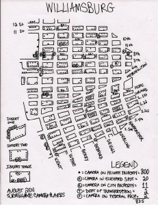

Last weekend’s Discotech event in Cambridge was a very productive day for us. We shared our project amongst a fairly diverse group of people and people responded very well. There were a lot of conversations around COINTELPRO to situate the project historically as well as conversations about more recent cases of infiltrations such as the exploits and of FBI Informant Brandon Darby (Scott Crow, an activist who was very close to Brandon is one of our first stories in the Infiltrated project). The hands-on workshop, creating a comprehensive timeline a TimelineJS visualization of the COINTELPRO infiltrations, allowed us to connect with people interested in data visualizations, including faculty from the program of Information Design and Visualization at Northeastern University who are interested in grounding information design and visualization courses with projects that have a social dimension such as the SoMove: Infiltrated project.
Author Archives: ricardodelima
SoMove — Project Update #1
We (Arthi, Richard, and Ricardo) are working with SoMove: Social Movements Oral History Tour. We had our first Google Hangout on Monday, 7pm EST with our contact, Puck Lo.
SoMove is network of independent oral historians, multimedia producers, journalists, storytellers, artists and activists working together to collect digital oral histories, share resources and some content with each other, and tour to present their work.
SoMove works with activists and community groups to document ways people creatively change their lives, neighborhoods and the world. Such stories push back against and reframe conventional ideas and oppressive narratives that derive from colonialism and are used to justify inequality.
Infiltrated, our project, is an ambitious multimedia project and online searchable database that tells the national story of government infiltration and surveillance of activist groups and communities targeted by the state since 2001. To do that we’ll be collecting and compiling government records (using the Freedom of Information Act) as well as first-person accounts. The challenge is to to build the multimedia platform, a hub/clearing house to share these stories. At launch there will be possibly two accounts of infiltration of activist groups each one with audio and their corresponding FOIA file —this will be the initial cohort to base the platform design around. Another goal is to have the platform be self-sustainable and also scalable as more stories and documentation are added to the website.
We had a preliminary discussion on methodology of design. Based on the information we have from our conversation with Puck, the team will produce a series of wireframes to iterate and discuss on the next meeting. It is possible that this exercise can be conducted at the Discotech event.
Hello World, I’m Ricardo

{kind=link}
a map of surveillance in Williamsburg via the NOT BORED! journal.
This year I’m also involved in the Design Studio for Social Intervention Department of Public Imagination residency working with Chelsea Collaborative in Chelsea, Massachusetts as resident artist. I’m working on the creation of a multi-sensory dictionary / encyclopedia of Chelsea —a DIY ethnography facilitated by youth groups involved with the Collaborative.
As a trained photographer and computer scientist, I also have a parallel interest in the photographic apparatus and its legacies of surveillance. I explore the connections between video, film, photography and other camera/sensor-based art. My interventions into public and gallery space highlight camera and sensory apparatus as a foundation for the exploration of sociocultural and conceptual ends. The focus of this codesign class fits into these kinds of interdisciplinary explorations.
I followed The Day We Fight Back in Reddit and Hackernews. I also browsed through the Twitter #DayWeFightBack stream. The Reddit AMA with the organizes was interesting as was the feedback from the community regarding issues regarding improving the workflow of the website, mostly regarding the clever call-your-representative feature. There was traction on this protest but not the kind of net-wide awareness that last year’s SOPA blackout protests created. We have work to do.